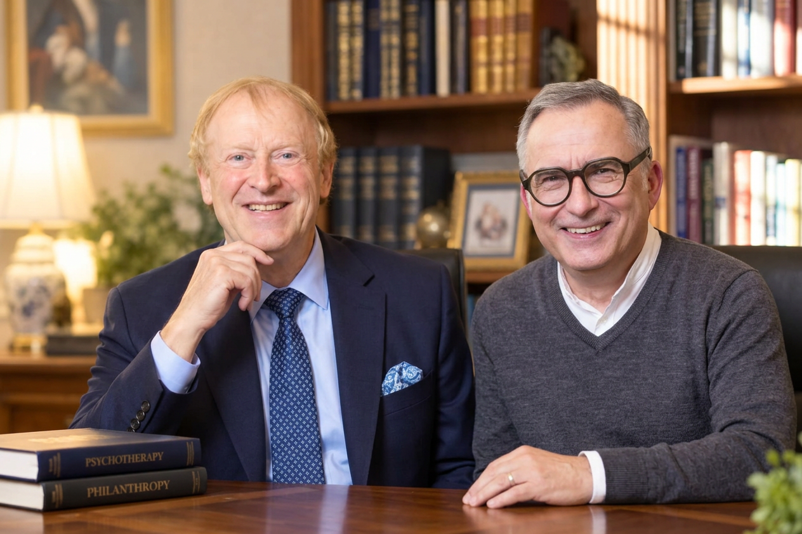

Wahrnehmen
Wir hören einen Abschnitt auf Hebräisch und betrachten, wie er gewöhnlich übersetzt wird.
Ein Gespräch zwischen Jerusalem und Magdeburg
Dr. Yuval Lapide und Michael Pinchas Eliyahu Deck entdecken mit Ihnen die hebräische Gedankenwelt biblischer Texte. Wort für Wort. Frage für Frage.

Yuval Lapide & Michael DeckUnsere Einladung
Was verändert sich, wenn wir einen vertrauten Bibeltext noch einmal hören – in der Sprache, in der er überliefert ist?
Eine Übersetzung eröffnet den Zugang. Der hebräische Text kann weitere Bezüge und Fragen sichtbar machen. Wir lesen genau, achten auf den Kontext und lassen jüdische Auslegung als jüdische Auslegung zu Wort kommen.
Unser Weg durch den Text
Kein Vorwissen in Hebräisch erforderlich. Neugier, Aufmerksamkeit und die Bereitschaft zum erneuten Lesen genügen.
Wir hören einen Abschnitt auf Hebräisch und betrachten, wie er gewöhnlich übersetzt wird.
Wir fragen nach Wortgebrauch, Zusammenhang und Stimmen aus der jüdischen Auslegungstradition.
Wir sprechen darüber, was eine neue Lesart für Gottesbild, Menschenbild und Alltag zur Frage stellt.
„Was steht im Text – und was verändert sich, wenn ich ihn so höre?“
Ein erster Einblick
Ein hebräisches Wort hat keine geheime Einheitsübersetzung. Seine Bedeutung entsteht im Satz und im Zusammenhang. Genau dort beginnt unsere Arbeit.
Wenn „Seele“ in der Übersetzung steht: Von welchem lebendigen Wesen und welchem Leben spricht der jeweilige Text?
Mensch & LebenWann ist von einem Wort die Rede, wann von einer Sache oder einem Ereignis? Der Zusammenhang entscheidet.
Wort & WirklichkeitWas geschieht, wenn biblische Umkehr als Bewegung der Rückkehr hörbar wird?
Umkehr & WegDas geplante Pilotformat
In einer ausführlichen Folge nehmen wir uns Zeit für einen biblischen Abschnitt. Der Text führt das Gespräch; die Fragen dürfen offen bleiben.
Yuval fragt nach dem Hebräischen. Michael fragt nach dem Leben.
Zwei Stimmen im Gespräch
Die unterschiedlichen Wege beider Gesprächspartner geben Raum für echtes Nachfragen, Entdecken und Widersprechen.
Hebräischer Text · jüdische Tradition
Yuval erschließt den hebräischen Wortlaut und bringt jüdische Leseweisen ins Gespräch. Er fragt genau hin: Was sagt der Text in seinem sprachlichen und überlieferten Zusammenhang?
Lebensfragen · geistliche Begleitung
Michael fragt als Unternehmer und geistlicher Begleiter, was diese Lektüre für vertraute Vorstellungen, die persönliche Berufung und das konkrete Handeln bedeuten könnte.
Häufige Fragen
Nein. Die hebräischen Wörter werden vorgelesen und im Text erklärt. Wer Hebräisch kennt, kann die Beobachtungen vertiefen.
Nein. Wir vergleichen mögliche Übersetzungen und prüfen, welche der jeweilige Kontext trägt. Sprachliche Beobachtung und spätere Auslegung werden kenntlich unterschieden.
Eingeladen sind alle, die biblische Texte aufmerksam lesen möchten. Jüdische Tradition wird in ihrer eigenen Stimme ernst genommen; unterschiedliche Glaubensperspektiven dürfen im Gespräch sichtbar bleiben.
Weiterhören
Sie möchten tiefer eintauchen in Yuval Lapides Auslegungen? Im Lapide Tonarchiv finden Sie zahlreiche weitere Vorträge und Gespräche zu jüdischer Auslegung und hebräischem Denken.